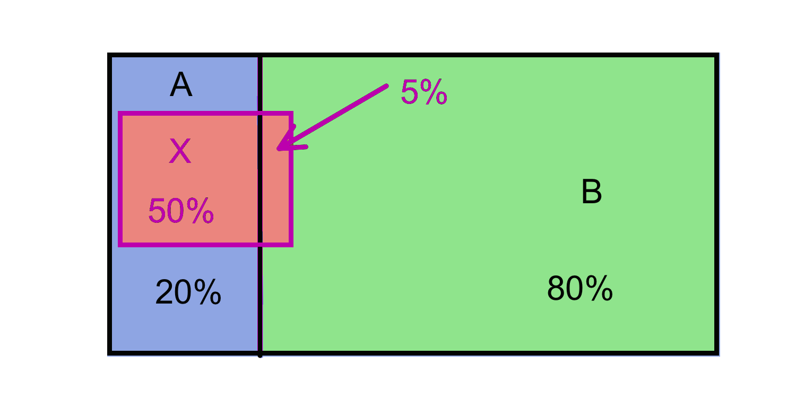
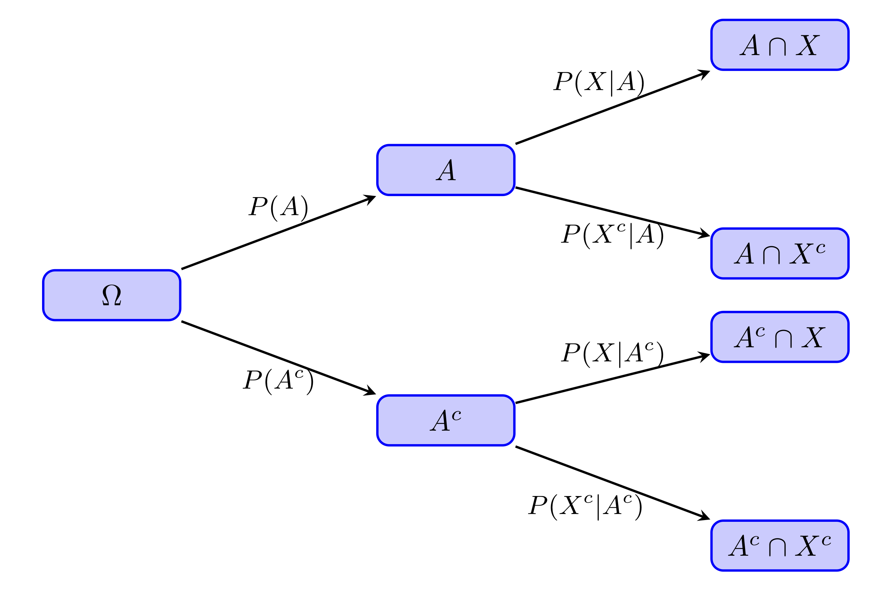
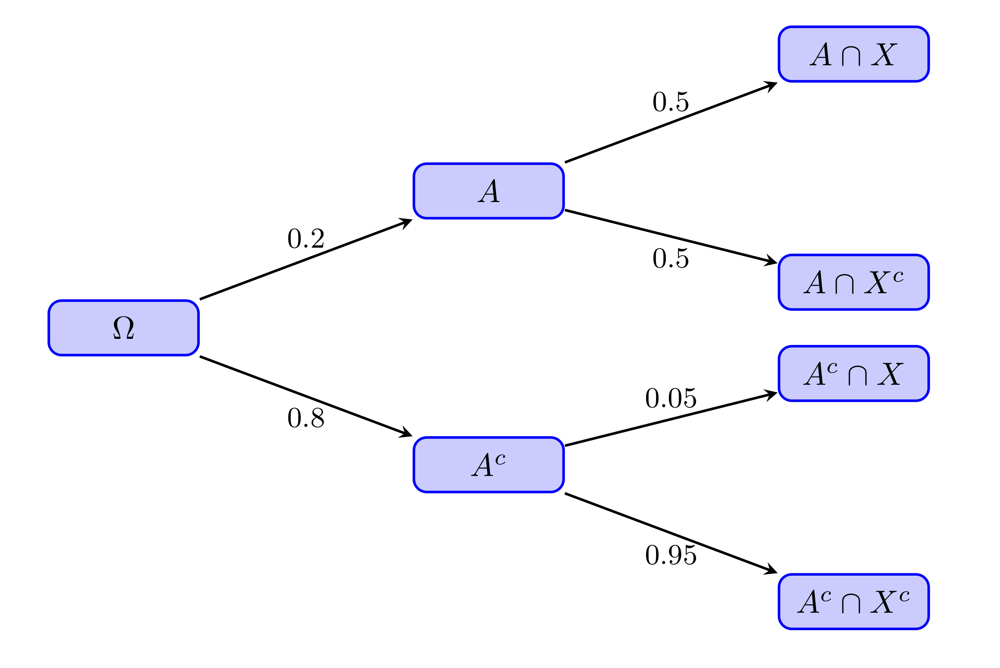

Lección 4 Probabilidades elementales: Las mates
La probabilidad de un suceso es, básicamente, un número entre 0 y 1 (o, si lo preferís, un porcentaje entre 0% y 100%) que mide la expectativa de que se dé este suceso. En este curso vamos a definir la probabilidad de un suceso como la proporción (la fracción, el porcentaje) de sujetos de una población (o a veces de una muestra, dependerá del contexto) en los que se da el suceso. Esta proporción mide la “probabilidad” de que si escogemos al azar un sujeto de la población, se dé en él el suceso (y de hecho coincide con esta probabilidad, para la definición formal de probabilidad que aquí no veremos).
Ejemplo 4.1 La probabilidad de que al lanzar una moneda al aire salga cara es la proporción de la población (virtual y prácticamente infinita) de lanzamientos de esta moneda en los que sale cara.
En casos MUY sencillos, cuando todos los resultados posibles tienen la misma probabilidad, esta proporción coincide con la fracción de veces en que se da este suceso en el conjunto de resultados posibles y por lo tanto se puede calcular con la famosa regla de Laplace: \[ \text{Probabilidad}=\frac{\text{Casos favorables}}{\text{Casos posibles}} \]
Por ejemplo:
La probabilidad de que salga cara al lanzar una moneda equilibrada al aire es 1/2 (casos favorables, 1; casos posibles, 2; los dos resultados tienen la misma probabilidad por definición de moneda equilibrada).
Pero la probabilidad de que un hijo sea varón no es 1/2, aunque solo haya dos sexos anatómicos. Es la proporción de hijos varones en el total de todos los hijos, que se estima en alrededor del 51.22%.
O más exageradamente, la probabilidad de que una mujer de entre 17 y 27 años sea miope no es 1/2, aunque solo haya dos resultados posibles: ser miope y no serlo. Esta probabilidad es la proporción de miopes en la población formada por todas las mujeres de esa franja de edad, que, en España en 2018, se estimaba en un 65.4% según un informe de la Asociación Visión y Vida.
Si lanzamos al aire dos veces seguidas una moneda equilibrada, ¿cuál es la probabilidad de que salga alguna cara?
Según el enciclopedista y matemático J. d’Alembert es 2/3. Su argumento era el siguiente. Si en el primer lanzamiento sale cara, ya tenemos una cara. Si sale cruz, volvemos a lanzar otra vez y miramos si sale cara o cruz. Por lo tanto, hay solo 3 resultados posibles: cara en el primer lanzamiento; cruz en el primer lanzamiento y cara en el segundo; cruz en ambos lanzamientos. De estos tres “casos posibles”, solo en los 2 primeros sale alguna cara. Casos favorables partido por casos posibles: 2/3.
¿Es correcto este argumento?La teoría matemática de las probabilidades es la que nos permite valorar lo exacta que es una estimación de un valor para una población a partir de una muestra. Por ejemplo, supongamos que elegimos al azar un grupo de 50 estudiantes de la UIB y observamos que 33 sufren de miopía. A partir de este dato, vamos a estimar que un 66% de los estudiantes de la UIB son miopes. ¿Hasta qué punto nos podemos fiar de esta estimación? La teoría de las probabilidades nos permitirá calcular la probabilidad de acertar con esta estimación más o menos un margen de error fijado.
4.1 Álgebra de conjuntos
Vamos a repasar muy rápidamente las notaciones y las propiedades de las operaciones de conjuntos, para poder usar este lenguaje en lo que sigue.
Sean \(A\) y \(B\) subconjuntos (en el contexto de la teoría de probabilidades, se los llama sucesos) de un conjunto \(\Omega\) (nuestra población o, en el lenguaje de la teoría de probabilidades, el espacio muestral).
\(A\cup B\) es la unión de \(A\) y \(B\): el conjunto formado por los elementos de \(\Omega\) que pertenecen a \(A\) o a \(B\) (o a ambos).
Corresponde a la disjunción del lenguaje natural.
\(A \cap B\) es la intersección de \(A\) y \(B\): el conjunto formado por los elementos que pertenecen simultáneamente a \(A\) y a \(B\).
Corresponde a la conjunción del lenguaje natural.
\(A^c\) es el complementario de \(A\): el conjunto formado por los elementos de \(\Omega\) que no pertenecen a \(A\).
Corresponde a la negación del lenguaje natural.
\(A-B=A \cap B^c\) es la diferencia “\(A\) menos \(B\)”: el conjunto formado por los elementos de \(A\) que no pertenecen a \(B\).
Por lo tanto, \(A^c=\Omega-A\).
Diremos que \(A\) y \(B\) son disjuntos, o incompatibles, cuando \(A\cap B=\emptyset\), donde \(\emptyset\) es el conjunto vacío, el conjunto que no tiene elementos.
Diremos que \(A\) está contenido, o incluido, en \(B\), y lo denotaremos por \(A\subseteq B\), cuando todo elemento de \(A\) pertenece a \(B\). Para recalcar que \(A\) está estrictamente contenido en \(B\) usaremos \(A\subsetneq B\).
Ejemplo 4.2 Consideremos la población \(\Omega\) formada por los estudiantes de una clase, y sean \(A\) el subconjunto formado por la mujeres de esa clase y \(B\) el subconjunto formado por los estudiantes de esa clase que llevan gafas.
Entonces:
\(A\cup B\) es el conjunto de los estudiantes de la clase que son mujeres o llevan gafas.
\(A \cap B\) es el conjunto de los estudiantes de la clase que son mujeres y llevan gafas, es decir, las mujeres de la clase que llevan gafas.
\(A^c\) es el conjunto de los estudiantes de la clase que no son mujeres, es decir los hombres de la clase.
\(B^c\) es el conjunto de los estudiantes de la clase que no llevan gafas.
\(A-B\) es el conjunto de las mujeres de la clase que no llevan gafas.
\(B-A\) es el conjunto de los estudiantes de la clase que llevan gafas y no son mujeres, es decir, los hombres de la clase que llevan gafas.
\(A\) y \(B\) serán disjuntos (llevar gafas y ser mujer serán incompatibles en esta clase) si no hay ninguna mujer en la clase que lleve gafas.
\(A\subseteq B\) será verdad si todas las mujeres de la clase llevan gafas.
\(B\subseteq A\) será verdad si todos los estudiantes de la clase que llevan gafas son mujeres.
Las propiedades de estas operaciones son las siguientes, y se corresponden a las propiedades de las conjunciones, disjunciones y negaciones en el lenguaje natural.
La unión y la intersección son conmutativas: \(A\cup B=B\cup A\) y \(A\cap B=B\cap A\).
La unión y la intersección son asociativas: \(A\cup(B\cup C)=(A\cup B)\cup C\) y \(A\cap(B\cap C)=(A\cap B) \cap C\).
Figura 4.1: Propiedad asociativa de la unión.
Figura 4.2: Propiedad asociativa de la intersección.
- La unión y la intersección son distributivas: \(A\cap(B\cup C)=(A\cap B)\cup (A\cap C)\) y \(A\cup(B\cap C)=(A\cup B)\cap (A\cup C)\).
Figura 4.3: Propiedad distributiva de la unión respecto de la intersección.
Figura 4.4: Propiedad distributiva de la intersección respecto de la unión.
Propiedad del doble complementario: \((A^c)^c=A\).
Corresponde a que, en el lenguaje natural, “No es verdad que no lleve gafas” significa lo mismo que “Lleva gafas”.
Figura 4.5: Propiedad del doble complementario.
Leyes de De Morgan: \((A\cup B)^c=A^c \cap B^c\) y \((A\cap B)^c=A^c\cup B^c\).
La primera corresponde a que, en el lenguaje natural, lo contrario de “Ser mujer o llevar gafas” es “No ser mujer Y no llevar gafas”. La segunda, a que lo contrario de “Ser mujer y llevar gafas” es “No ser mujer O no llevar gafas”.
Figura 4.6: Una ley de de Morgan.
Figura 4.7: La otra ley de de Morgan.
Que la unión y la intersección sean asociativas y conmutativas nos permite escribir expresiones del estilo de \[ A_1\cap A_2\cap \cdots \cap A_n,\qquad A_1\cup A_2\cup \cdots \cup A_n \] para indicar, respectivamente, la intersección o la unión de los sucesos \(A_1,\ldots,A_n\) agrupándolos como queramos y en el orden que queramos.
4.2 Algunas fórmulas básicas
Hemos definido la probabilidad \(P(A)\) de un subconjunto (suceso) \(A\) de una población (espacio muestral) \(\Omega\) como la fracción de los sujetos de \(\Omega\) que pertenecen a \(A\). A partir de esta definición se deducen, por puro conteo, las propiedades siguientes:
Para todo suceso \(A\), \(0\leqslant P(A)\leqslant 1\).
Un subconjunto \(A\) de \(\Omega\) no puede representar ni una fracción negativa ni una fracción mayor que 1 de los sujetos de \(\Omega\).
\(P(\Omega)=1\) y \(P(\emptyset)=0\) (recordad que \(\emptyset\) es el conjunto vacío).
Si \(A\) y \(B\) son dos sucesos disjuntos, entonces \(P(A\cup B)=P(A)+P(B)\).
Si no hay ningún sujeto que pertenezca simultáneamente a \(A\) y a \(B\), entonces el número de sujetos que pertenecen a \(A\) o a \(B\) es la suma de los que pertenecen a \(A\) y de los que pertenecen a \(B\). Entonces, dividiendo por el número total de individuos de la población \(\Omega\) (su cardinal), obtenemos que la fracción de los sujetos que pertenecen a \(A\) o a \(B\) es la suma de las fracciones de los que pertenecen a \(A\) y de los que pertenecen a \(B\).
Más en general, si \(A_1,A_2,\ldots,A_n\) son sucesos disjuntos dos a dos, entonces \[ P(A_1\cup A_2\cup \cdots \cup A_n)=P(A_1)+P(A_2)+\cdots +P(A_n). \]
\(P(A-B)=P(A)-P(A\cap B)\).
El número de sujetos que pertenecen a \(A\) pero no a \(B\) se obtiene restando del total de sujetos de \(A\) los que pertenecen simultáneamente a \(A\) y a \(B\), es decir, a \(A\cap B\). Dividiendo por el número total de individuos de la población, obtenemos la correspondiente igualdad de proporciones.
Figura 4.8: Descomposición de A en dos conjuntos disjuntos.
\(P(A^c)=1-P(A)\).
Es decir, la fracción de los sujetos que no pertenecen a \(A\) es 1 menos la fracción de los que sí pertenecen a \(A\).
Si \(A\subseteq B\), entonces \(P(A)\leqslant P(B)\).
Si \(A\) está contenido en \(B\), la fracción de los sujetos que pertenecen a \(A\) es más pequeña que la de los que pertenecen a \(B\).
\(P(A\cup B)=P(A)+P(B)-P(A \cap B)\).
Si queréis contar cuántos sujetos hay en \(A\cup B\), tenéis que añadir a los de \(A\) los de \(B-A\) (mirad la Figura 4.9). Dividiendo por el total de la población para pasar a proporciones, esto nos dice que \[ P(A\cup B)=P(A)+P(B-A)=P(A)+P(B)-P(A \cap B) \] donde la segunda igualdad se debe a (5).
Por ejemplo, si en una población hay un 50% de mujeres y un 60% de miopes, y un 35% del total son mujeres miopes, las personas que son mujeres o miopes (recordad, o ambas cosas) forman un 75% de la población: al 50% de mujeres hay que sumarle el 25% de miopes que no son mujeres.
Figura 4.9: Descomposición de la unión en tres conjuntos disjuntos.
- Otra manera de escribir la ecuación anterior es \[ P(A\cap B)=P(A)+P(B)-P(A \cup B) \]
En general, es falso que \(P(A\cap B)=P(A)\cdot P(B)\). Por ejemplo, en la población con un 50% de mujeres, un 60% de miopes y un 35% de mujeres miopes que hemos usado antes, 0.6·0.5 no es igual a 0.35.
Más adelante veremos cuándo esta igualdad es verdadera.Ejemplo 4.3 Supongamos que el 0.1% de todos los donantes de sangre da positivo en el test de VIH, y el 1% da positivo en el test de herpes simple (VHS). El 0.05% da positivo en ambos tests.
¿Cuál es la probabilidad de que un donante escogido al azar dé positivo en al menos uno de los dos tests? ¿Y la de que un donante escogido al azar dé positivo en VHS pero no en VIH?
Vamos a poner nombres a los sucesos involucrados en estas preguntas:
\(A\): Dar positivo en VIH. Sabemos que \(P(A)=0.001\).
\(B\): Dar positivo en VHS. Sabemos que \(P(B)=0.01\).
\(A\cap B\): Dar positivo en los dos. Sabemos que \(P(A\cap B)=0.0005\).
\(A\cup B\): Dar positivo en al menos uno de los dos. Es lo que queremos calcular en la primera pregunta.
Por la propiedad (8): \[ P(A \cup B) =P(A)+P(B)-P(A\cap B)=0.001+0.01-0.0005=0.0105 \] La probabilidad de que un donante escogido al azar dé positivo en al menos uno de los dos tests es del 1.05%.
\(B-A\): Dar positivo en VHS pero no en VIH. Es lo que queremos calcular en la segunda pregunta.
Por la propiedad (5), \[ P(B-A)=P(B)-P(A\cap B)=0.01-0.0005=0.0095 \] La probabilidad de que un donante escogido al azar dé positivo en VHS pero no en VIH es del 0.95%.
Otra manera de calcular estas probabilidades sin necesidad de recordar fórmulas sería:
Tomar como referencia una población de un tamaño concreto.
Calcular en esta población cuántos individuos pertenecen a \(A\cap B\) (dan positivo en ambos tests), cuántos a \(A-B\) (positivos en VIH pero no en VHS), cuántos a \(B-A\) (positivos en VHS pero no en VIH) y cuántos a \(A^c\cap B^c\) (negativo en ambos tests) y a partir de ahí calcular todo lo que queramos.
A este método se le suele llamar método de frecuencias naturales (“la cuenta de la vieja” no suena lo suficientemente científico), y así lo llamaremos nosotros. Pongámoslo en práctica en nuestro caso:
Vamos a tomar una población de referencia de 10,000 donantes
¿Por qué este número? Veamos, fijaos en que la proporción de sujetos en \(A\cap B\) es del 0.05%, es decir, 0.0005, y para facilitar los cálculos nos gustaría que todos los números que nos salieran fueran enteros, para no liarnos con decimales. Como 0.0005·10000=5, parece que 10,000 nos va a valer.
Los sujetos de \(A\) son el 0.1% de la población: 10
Los sujetos de \(B\) son el 1% de la población: 100
Los sujetos de \(A\cap B\) son el 0.05% de la población: 5
Entonces, los sujetos de \(A-B\) serán los de \(A\) menos los de \(A\cap B\): 5
Y los sujetos de \(B-A\) serán los de \(B\) menos los de \(A\cap B\): 95
Por ahora ya tenemos: 5 sujetos positivos en VIH y en VHS; 5 positivos en VIH y negativos en VHS; y 95 positivos en VHS y negativos en VIH. En total, 105 sujetos. El resto serán negativos tanto en VIH como en VHS.
Por lo tanto, los sujetos de \(A^c\cap B^c\) serán 10000-105=9895.
Obtenemos la tabla de frecuencias siguiente: \[ \begin{array}{r|c|c|c} & A\ (\text{VIH}+) & A^c \ (\text{VIH}-) & \text{Total} \\ \hline B\ (\text{VHS}+) & 5 & 95 & 100 \\ \hline B^c\ (\text{VHS}-) & 5 & 9895 & 9900 \\ \hline \text{Total} & 10& 9990 & 10000 \\ \end{array} \]
Y ahora, cambiando “probabilidad” por “proporción”, ya podemos calcular lo que queramos.
¿Cuál es la proporción de sujetos que dan positivo en algún test?
Hay 105 sujetos en la tabla que dan positivo en algún test: los 10 positivos en VIH y los 95 positivos en VHS y negativos en VIH. Por lo tanto, su proporción es de 105/10000=0.0105.
¿Cuál es la proporción de sujetos que dan positivo en VHS pero no en VIH?
Hay 95 sujetos en la tabla que dan positivo en VHS y negativo en VIH, por lo que su proporción es de 95/10000=0.0095.
Seguimos en la situación anterior: el 0.1% de todos los donantes de sangre da positivo en el test de VIH, el 1% da positivo en el test de herpes, y el 0.05% da positivo en los dos tests.
¿Cuál es la probabilidad de que un donante escogido al azar dé positivo en un solo test?Supongamos ahora que el 0.1% de todos los donantes de sangre da positivo en el test de VIH, el 1% da positivo en el test de herpes y el 1.07% da positivo en al menos uno de los dos tests.
¿Cuál es la probabilidad de que un donante escogido al azar dé positivo en ambos tests? ¿Y la de que dé positivo en un solo test?Y supongamos ahora que el 0.1% de todos los donantes de sangre da positivo en el test de VIH, el 1% da positivo en el test de herpes y el 1.2% da positivo en al menos uno de los dos tests.
¿Cuál es la probabilidad de que un donante escogido al azar dé positivo en ambos tests? ¿Y la de que dé positivo en un solo test?Figura 4.10: ¡Cuidado con lo que respondéis!
Ejemplo 4.4 En la Sección 3.3.1 hemos dado las probabilidades de que se escoja más de una vez algún individuo en algunas situaciones. Por ejemplo, si escogemos 100 individuos de las Baleares (suponiendo que su población es de 1,150,000 habitantes) al azar permitiendo repeticiones. ¿Cómo se calculan estas probabilidades?
Vamos a suponer que escogemos los individuos uno tras otro. El plan va a ser calcular primero la probabilidad \(p\) de que todos los individuos de la muestra sean diferentes. Entonces, la probabilidad de que salga al menos uno repetido será \(1-p\).
Como, en el muestreo aleatorio simple, todos los grupos de 100 baleares (con posibles repeticiones) tienen la misma probabilidad de ser elegidos, podemos usar la fórmula de Laplace “casos favorables partido por casos posibles” para calcular \(p\). Solo hay que identificar cuántos casos favorables y cuántos casos posibles hay.
Casos favorables. ¿De cuántas maneras podemos elegir 100 baleares, uno tras otro, de manera que todos sean diferentes?
- El primero puede ser cualquiera: hay 1,150,000 posibilidades.
- Una vez hemos elegido el primero, como el segundo ha de ser diferente, puede ser cualquiera de los 1,149,999 restantes.
- Una vez hemos elegido los dos primeros, como el tercero ha de ser diferente de ellos, lo podemos escoger de los 1,149,998 restantes.
- En general, cuando hemos elegido n sujetos, el siguiente puede ser cualquiera de los 1,150,000-n restantes.
- Y así, cuando hemos elegido los 99 primeros, para el último, el centésimo, tenemos 1,150,000-99=1,149,901 posibilidades.
Por lo tanto hay \[ 1150000\times 1149999\times 1149998\times \cdots\times 1149901 \] posibles elecciones de 100 baleares diferentes.
Casos posibles. ¿De cuántas maneras podemos elegir 100 baleares, uno tras otro, sin ninguna restricción?
- El primero puede ser cualquiera: hay 1,150,000 posibilidades.
- Una vez hemos elegido el primero, como el segundo puede ser cualquiera, de nuevo tenemos 1,150,000 posibilidades para él.
- Una vez hemos elegido los dos primeros, como el tercero puede ser cualquiera, seguimos teniendo 1,150,000 posibilidades.
- En general, cuando hemos elegido n sujetos, para el siguiente volvemos a tener 1,150,000 posibilidades.
Por lo tanto hay \[ \overbrace{1150000\times 1150000\times 1150000\times \cdots\times 1150000}^{100}=1150000^{100} \] posibles elecciones de 100 baleares sin ninguna restricción.
Por la fórmula de Laplace, la probabilidad \(p\) de que al elegir al azar 100 baleares nos salgan todos diferentes es \[ p=\frac{1150000\times 1149999\times\cdots\times 1149901}{1150000^{100}} \] y, finalmente, la probabilidad de que al elegir al azar 100 baleares nos salga alguno repetido es \[ 1-p=1-\frac{1150000\times 1149999\times\cdots\times 1149901}{1150000^{100}} \] Naturalmente, os va a costar calcular este número con una calculadora científica sencilla, pero para eso están los ordenadores. Da 0.0042952.
R dispone de dos funciones relacionadas con la probabilidad de que se dé alguna repetición en una muestra aleatoria simple de un tamaño dado:
La instrucción
pbirthday(n,N)nos da la probabilidad de que en una muestra aleatoria simple de tamaño n de una población de tamaño N haya algún elemento repetido.La instrucción
qbirthday(p,N)nos da el tamaño mínimo de una muestra aleatoria simple de una población de tamaño N para que la probabilidad de que haya algún elemento repetido sea \(\geqslant p\).
El nombre birthday hace referencia a la paradoja del cumpleaños: el típico problema de calcular la probabilidad de que dos estudiantes de una clase celebren el cumpleaños el mismo día y asombrarse de que en una clase de 50 estudiantes haya más de un 95% de probabilidades de que haya algún cumpleaños repetido.
En efecto, podemos entender una clase de 50 estudiantes como una muestra aleatoria simple de 50 fechas de nacimiento, escogidas de un conjunto de 366 posibles fechas (los 366 días de un año bisiesto). La probabilidad de que al menos 2 estudiantes celebren el cumpleaños el mismo día es la probabilidad de que se dé al menos una repetición en esta muestra. R lo calcula con:
pbirthday(50,366)## [1] 0.9700731La probabilidad de que en una muestra aleatoria simple de 100 ciudadanos de las Baleares se dé alguna repetición se puede calcular mediante
pbirthday(100,1150000)## [1] 0.0042952214.3 Odds
En algunos contextos, las probabilidades se presentan en forma de odds (la traducción más común en castellano es momios, pero se usan otras: posibilidades, oportunidades, ocasiones…). Las odds de un suceso \(A\) son \[ \text{Odds}(A)=\frac{P(A)}{P(A^c)}=\frac{P(A)}{1-P(A)}. \] Nos dicen cuántas veces es más probable \(A\) que “no \(A\)”.
Figura 4.11: Momios de gatitos en el British Museum (fotografía de M. Sánchez).
Si \(\text{Odds}(A)=q\), significa que por cada vez que ocurre “no \(A\)”, ocurre \(q\) veces \(A\). Por ejemplo, si las odds de suspender una asignatura son 2/3, significa que:
- Por cada estudiante que aprueba, hay 2/3 de estudiante que suspenden.
- Por cada 3 estudiantes que aprueban, hay 2 que suspenden.
- De cada 5 estudiantes, 3 aprueban y 2 suspenden.
- 2 de cada 5 estudiantes suspenden.
- La probabilidad de suspender es de un 40%.
Ejemplo 4.5 Algunos ejemplos de odds a partir de probabilidades:
- Si \(P(A)=0.2\), \(\text{Odds}(A)=0.2/0.8=0.25\).
- Si \(P(A)=0\), \(\text{Odds}(A)=0\).
- Si \(P(A)=0.5\), \(\text{Odds}(A)=1\).
- Si \(P(A)=1\), \(\text{Odds}(A)=\infty\).
Como son un cociente de dos probabilidades, las odds de un suceso son siempre mayores o iguales que 0 y pueden tomar cualquier valor entre 0 e \(\infty\), ambos incluidos.
Si lanzamos un dado equilibrado de 10 caras numeradas del 0 al 9:
¿Qué valen las odds de sacar un 3?
¿Qué valen las odds de sacar un múltiplo de 3?
Si sabemos las odds de \(A\), podemos calcular la probabilidad \(P(A)\): \[ \begin{array}{rl} \text{Odds}(A)=\dfrac{P(A)}{1-P(A)}\!\!\!\! & \Longrightarrow \text{Odds}(A)-\text{Odds}(A)P(A)=P(A)\\ & \Longrightarrow P(A)=\dfrac{\text{Odds}(A)}{1+\text{Odds}(A)} \end{array} \]
Por lo tanto, dos sucesos tienen la misma probabilidad si, y solo si, tienen las mismas odds.
Observad que la función \[ x\mapsto\frac{x}{1+x} \] es creciente en \(x\):
Figura 4.12: Gráfica de la curva y=x/(1+x).
Por lo tanto \[ \text{Odds}(A)>\text{Odds}(B)\Longleftrightarrow P(A)>P(B) \] Es decir, \(A\) es más probable que \(B\) si, y solo si, las odds de \(A\) son mayores que las de \(B\).
Como veremos en la Sección 5.2.2, la manera correcta de presentar los resultados en los estudios de casos y controles es en forma de odds ratios. La odds ratio (razón de momios, de oportunidades…) de dos sucesos \(A\) y \(B\) es el cociente de sus odds: \[ \text{OR}(A,B)=\frac{\text{Odds}(A)}{\text{Odds}(B)} \] Es decir, \(\text{OR}(A,B)\) nos dice cuántas veces son mayores (o menores) las odds de \(A\) que las de \(B\). Su valor es difícil de interpretar en términos de probabilidades excepto por lo que refiere a su relación con 1:
\(\text{OR}(A,B)=1\Longleftrightarrow \text{Odds}(A)=\text{Odds}(B) \Longleftrightarrow P(A)=P(B)\)
\(\text{OR}(A,B)>1\Longleftrightarrow \text{Odds}(A)>\text{Odds}(B) \Longleftrightarrow P(A)>P(B)\)
\(\text{OR}(A,B)<1\Longleftrightarrow \text{Odds}(A)<\text{Odds}(B) \Longleftrightarrow P(A)<P(B)\)
Pero, por ejemplo \[ \text{OR}(A,B)=2 \Longleftrightarrow \text{Odds}(A)= 2\cdot \text{Odds}(B) \hspace{1.2ex} \not\hspace{-1.2ex}\Longleftrightarrow P(A)= 2\cdot P(B) \]
Ejemplo 4.6 En un estudio de casos y controles reciente (Y. Nobel et al, Gastroenterology 159 (2020), pp. 373-375) se afirma que
“la presencia de síntomas gastrointestinales se asoció a un incremento del 70% en el riesgo de dar positivo [en el test de COVID-19]: odds ratio, 1.7.”
¿Qué significa esto? Que la odds ratio valga 1.7 significa que las odds de dar positivo en COVID-19 si se tienen síntomas gastrointestinales son 1.7 veces las de dar positivo si no se tienen síntomas gastrointestinales, es decir un 70% mayores. Pero fijaos que estamos hablando de las odds, no del riesgo entendido en sentido de probabilidad. No tiene por qué ser cierto que la probabilidad de dar positivo en COVID-19 si se tienen síntomas gastrointestinales sea un 70% mayor que si no se tienen síntomas gastrointestinales.
En este estudio concreto, se obtuvo la tabla de frecuencias siguiente (SG abrevia “síntomas gastrointestinales”) \[ \begin{array}{r|c|c|c} & \text{COVID-19 } + & \text{COVID-19 } - & \text{Total}\\ \hline \text{SG Sí} & 97& 63 & 160\\\hline \text{SG No} & 181 & 175 & 356\\\hline \text{Total} & 278 & 238 & 316 \end{array} \]
Por lo tanto, la proporción de COVID-19 positivos entre los que tuvieron síntomas gastrointestinales fue 97/160=0.606 y la proporción de COVID-19 positivos entre los que no tuvieron síntomas gastrointestinales fue 181/356=0.508. Como 0.606/0.508=1.19, la primera es un 19% mayor que la segunda, no un 70% mayor.
Veamos las odds. Las de ser COVID-19 positivo entre los que tuvieron síntomas gastrointestinales son \[ \frac{97/160}{63/160}=1.54 \] Las de ser COVID-19 positivo entre los que no tuvieron síntomas gastrointestinales son \[ \frac{181/356}{175/356}=1.03 \] La odds ratio es, entonces 1.54/1.03=1.495.
Bueno, sí, hemos mentido. Lo que les da 1.7 es la “odds ratio ajustada”, que no hemos definido y de la que con suerte hablaremos a final de curso.
¿Qué valen las odds de sacar 3 caras en 3 lanzamientos de una moneda equilibrada?
Si un suceso pasa 2 veces de cada 10 veces que puede pasar, ¿qué valen sus odds?
Si las odds de \(A\) son 1/2, ¿qué vale \(P(A)\)?
Si \(\text{OR}(A,B)=0.5\) y \(P(A)=1/2\), ¿qué vale \(P(B)\)?
Sí \(\text{OR}(A,B)=0.5\) y \(P(A)=3/4\), ¿qué vale \(P(B)\)?
4.4 Probabilidad condicionada
Dados dos sucesos \(A\) y \(B\), con \(P(A)>0\), la probabilidad de \(B\) condicionada a \(A\) es \[ P(B|A)=\frac{P(A\cap B)}{P(A)} \]
Este valor representa la fracción de los sujetos de \(A\) que pertenecen a \(B\); es decir, es la probabilidad de que si ocurre \(A\), entonces también ocurra \(B\).
Ejemplo 4.7 Supongamos que en una clase de 20 hombres y 30 mujeres, 15 hombres y 18 mujeres llevan gafas. La tabla de frecuencias correspondiente es
\[ \begin{array}{r|c|c|c} & \text{Gafas} & \text{No gafas} & \text{Total}\\ \hline \text{Mujeres} & 18 &12 & 30\\ \hline \text{Hombres} & 15 & 5 & 20 \\ \hline \text{Total} & 33 & 17 & 50 \\ \end{array} \]
- ¿Cuál es la probabilidad de que un estudiante sea mujer?
Como hay 30 mujeres de un total de 50 estudiantes, esta probabilidad es 30/50=0.6
- ¿Cuál es la probabilidad de que un estudiante lleve gafas?
Como hay 33 estudiantes con gafas de un total de 50 estudiantes, esta probabilidad es 33/50=0.66
- ¿Cuál es la probabilidad de que un estudiante sea mujer y lleve gafas?
Como la probabilidad de ser mujer es 0.6 y la probabilidad de llevar gafas es 0.66, la probabilidad de ser mujer y llevar gafas es el producto: 0.6·0.66=0.396.
Volvamos a intentarlo. Como hay 18 mujeres que llevan gafas de un total de 50 estudiantes, esta probabilidad es 18/50=0.36
- ¿Cuál es la probabilidad de que una mujer lleve gafas?
Como hay 18 mujeres que llevan gafas de un total de 30 mujeres, esta probabilidad es 18/30=0.6. Fijaos que este valor es igual a \[ P(\text{gafas}|\text{mujer})=\frac{P(\text{mujer y gafas})}{P(\text{mujer})}=\frac{18/50}{30/50}=\frac{18}{30} \]
- Escogemos un estudiante al azar. ¿Cuál es la probabilidad de que si es mujer, entonces lleve gafas?
Es la misma pregunta que la anterior, por lo que la respuesta es la misma: 18/30=0.6.
- ¿Cuál es la probabilidad de que un estudiante que lleve gafas sea mujer?
Como hay 18 mujeres que llevan gafas de un total de 33 estudiantes que lleven gafas, esta probabilidad es 18/33=0.545. Fijaos, de nuevo, que este valor es igual a \[ P(\text{mujer}|\text{gafas})=\frac{P(\text{mujer y gafas})}{P(\text{gafas})}=\frac{18/50}{33/50}=\frac{18}{33} \]
- Escogemos un estudiante al azar. ¿Cuál es la probabilidad de si lleva gafas, entonces sea mujer?
Es la misma pregunta que la anterior, por lo que la respuesta es la misma: 18/33.
No confundáis:
\(P(B)\): La probabilidad de que un individuo de la población global \(\Omega\) pertenezca a \(B\).
Por ejemplo, si \(B\) es “llevar gafas”, \(P(B)\) es la probabilidad de que una persona lleve gafas. La población en la que calculamos probabilidades es la de todas las personas.
\(P(B|A)\): Probabilidad de que un individuo de \(A\) pertenezca a \(B\).
Por ejemplo, si además \(A\) es “ser mujer”, \(P(B|A)\) es la probabilidad de que una mujer lleve gafas. La población en la que calculamos probabilidades es la de las mujeres.
\(P(A|B)\): Probabilidad de que un individuo de \(B\) pertenezca a \(A\).
Por ejemplo, con las notaciones anteriores, \(P(A|B)\) es la probabilidad de que una persona que lleva gafas sea mujer. La población en la que calculamos probabilidades es la de las personas que llevan gafas.
\(P(B\cap A)\): Probabilidad de que un individuo de la población global pertenezca simultáneamente a \(A\) y a \(B\).
Por ejemplo, con las notaciones anteriores, \(P(A\cap B)\) es la probabilidad de que una persona sea mujer y lleve gafas. La población en la que calculamos probabilidades vuelve a ser todas las personas.
En una universidad, los alumnos se distribuyen de la manera siguiente por tipos de estudios y sexos: \[ \begin{array}{r|c|c|c|c|c} \text{Estudio} & \text{Ciencias} & \text{Derecho} & \text{Educación} & \text{Otros} & \text{Total}\\ \hline \text{Hombres} & 1200 & 1300 & 300 & 2000 & 4800\\ \hline \text{Mujeres} & 1400 & 600 & 1600 & 1600 & 5200\\ \hline \text{Total} & 2600 &1900 & 1900 & 3600 & 10000\\ \end{array} \]
Si escojo un estudiante al azar, ¿cuál es la probabilidad de que:
- Sea hombre o mujer?
- Sea mujer?
- Estudie Ciencias?
- No estudie Ciencias?
- Sea mujer o estudie Derecho?
- Sea mujer y estudie Derecho?
- Sea mujer pero no estudie Derecho?
- Si estudia Educación, sea mujer?
- Si es mujer, estudie Educación?
- Si es mujer, no estudie Educación?
- Si no es mujer, estudie Educación?
La probabilidad condicionada a \(A\), \(P(\ldots|A)\), es una probabilidad “de verdad”, simplemente hemos cambiado la población de \(\Omega\) a \(A\). Es decir, en vez de trabajar con proporciones de la población total \(\Omega\), trabajamos con proporciones de la subpoblación definida por los sujetos de \(A\). Por lo tanto, \(P(\ldots |A)\) satisface todas las propiedades de las probabilidades. Por ejemplo, se cumple que:
- \(P(B^c|A)=1-P(B|A)\)
- \(P(C-B|A)=P(C|A)-P(B\cap C|A)\)
- \(P(B\cup C|A)=P(B|A)+P(C|A)-P(B\cap C|A)\)
Pero si en \(P(B|A)\) fijamos la \(B\) y permitimos que \(A\) varíe (es decir, si fijamos el suceso que nos interesa y variamos la población en la que calcularemos su probabilidad), ya no se cumplen las propiedades de las probabilidades. Por ejemplo, en general:
\(P(B|A^c)\neq 1-P(B|A)\)
No podéis esperar que la proporción de hombres que llevan gafas sea 1 menos la proporción de mujeres que llevan gafas, ¿verdad?
\(P(B|A_1\cup A_2)\neq P(B|A_1)+P(B|A_2)-P(B|A_1\cap A_2)\)
Ejemplo 4.8 Supongamos que un 15% de los adultos son hipertensos, un 25% de los adultos creen que son hipertensos, y un 9% de los adultos son hipertensos y creen que lo son.
Si un adulto cree que es hipertenso, ¿cuál es la probabilidad de que lo sea?
Si un adulto es hipertenso, ¿cuál es la probabilidad de que crea que lo es?
Si un adulto no cree que sea hipertenso, ¿cuál es la probabilidad de que sí lo sea?
Pongamos nombres a los sucesos involucrados en estas preguntas:
\(A\): Ser hipertenso; \(P(A)=0.15\)
\(B\): Creer ser hipertenso; \(P(B)=0.25\)
\(A\cap B\): Ser hipertenso y creerlo; \(P(A \cap B)=0.09\)
En la primera pregunta nos piden la probabilidad de \(A\) condicionada a \(B\): \[ P(A|B)=\frac{P(A\cap B)}{P(B)}=\dfrac{0.09}{0.25}=0.36 \] Si un adulto cree ser hipertenso, su probabilidad de que lo sea es del 36%.
En la segunda pregunta nos piden la probabilidad de \(B\) condicionada a \(A\): \[ P(B|A) =\frac{P(A\cap B)}{P(A)}=\frac{0.09}{0.15}=0.6 \] Si un adulto es hipertenso, su probabilidad de que crea que lo es es del 60%.
Y en la tercera pregunta nos piden la probabilidad de \(A\) condicionada a \(B^c\): \[ P(A|B^c) =\frac{P(A\cap B^c)}{P(B^c)}=\frac{P(A)-P(A\cap B)}{1-P(B)}=\frac{0.06}{0.75}=0.08 \] Si un adulto no cree ser hipertenso, su probabilidad de que sí serlo es del 8%.
Ejemplo 4.9 Un test para el VIH da positivo en un 99% de los casos en los que el virus está presente. En una población con el 0.5% de infectados por VIH:
¿Cuál es la probabilidad de que si hacemos el test a un infectado, dé positivo?
¿Cuál es la probabilidad de que hagamos el test a un infectado y dé positivo?
La respuesta a la primera pregunta nos la dan en el enunciado: “el test da positivo en un 99% de los casos en los que el virus está presente”, por lo que “la probabilidad de que si hacemos el test a un infectado, dé positivo” es 0.99.
Pero la segunda pregunta no pide lo mismo que la primera, sino la probabilidad de que pasen dos cosas: que hagamos el test a un infectado Y que dé positivo. Es la probabilidad de una intersección.
Pongamos nombres:
\(A\): Estar infectado; \(P(A)=0.005\)
\(B\): Dar positivo. De este suceso, sabemos solo la probabilidad condicionada \(P(B|A)=0.99\)
\(A\cap B\): Estar infectado y dar positivo. Es el suceso del que nos piden la probabilidad. \[ P(A|B)=\frac{P(A \cap B)}{P(B)}\Longrightarrow P(A \cap B)=P(A|B)\cdot P(B)=0.005\cdot 0.99=0.00495 \]
La probabilidad de que, al hacer el test a un individuo al azar, dé positivo y esté infectado es del 0.0495%.
Ejemplo 4.10 Un amigo cardiólogo nos contó una vez que la mitad de los enfermos que acudían a su consulta por supuestos problemas de corazón tenían en realidad estrés, y dos tercios, depresión. Nosotros vamos a suponer ahora que sólo un 15% de estos enfermos no sufrían ninguna de estas dos condiciones.
- ¿Cuál es la probabilidad de que un enfermo de estos tenga estrés si tiene depresión?
- ¿Cuál es la probabilidad de que un enfermo de estos no tenga estrés si no tiene depresión?
Esta vez vamos a usar primero el método de frecuencias naturales. Vamos a suponer que tenemos una población de referencia de 300 personas que acuden al cardiólogo.
- La mitad, 150, tienen estrés y las otras 150 no.
- Dos tercios, 200, tienen depresión y 100 no.
- Hay un 15% de la población, es decir, 45 sujetos que no tienen ninguna de las dos condiciones. Por lo tanto:
- De los 150 que no tienen estrés, 45 tampoco tienen depresión y los otros 105 sí que tienen depresión.
- De los 100 que no tienen depresión, 45 tampoco tienen estrés y los otros 55 sí que tienen estrés.
- Ya tenemos 45 pacientes sin estrés ni depresión, 105 con depresión pero sin estrés y 55 con estrés pero sin depresión, en total 205 pacientes. Los otros 95, del total de 300, tendrán ambas enfermedades.
Obtenemos la tabla de frecuencias siguiente: \[ \begin{array}{r|c|c|c} & \text{Depresión} & \text{No depresión} & \text{Total}\\ \hline \text{Estrés} & 95 & 55 & 150 \\ \hline \text{No estrés} & 105 & 45 & 150 \\ \hline \text{Total} & 200 & 100 & 300\\ \end{array} \] Y ahora:
Como hay 200 pacientes con depresión, de los cuales 95 tienen también estrés, la proporción de pacientes con depresión que tienen estrés es 95/200=0.475. Un 47.5% de los pacientes que tienen depresión, también tienen estrés.
Como hay 100 pacientes sin depresión, de los cuales 45 no tienen estrés, la proporción de pacientes sin depresión que tampoco tienen estrés es 45/100=0.45. Un 45% de los pacientes que no tienen depresión, tampoco tienen estrés
¿Cómo lo hubiéramos resuelto usando las propiedades de probabilidades? Pongamos nombres:
\(E\): Tener estrés; \(P(E)=0.5\)
\(D\): Tener depresión; \(P(D)=2/3\)
\(E^c \cap D^c\): No tener ni estrés ni depresión; \(P(E^c\cap D^c)=0.15\)
Con estas notaciones, en la primera pregunta nos piden \[ P(E|D)=\dfrac{P(E\cap D)}{P(D)} \] Para calcularla, necesitamos saber \(P(E\cap D)\), que vale: \[ P(E\cap D)=P(E)P(D)=0.5\cdot \frac{2}{3}=0.3333 \]
Habrá que currárselo algo más:
\(P((E\cup D)^c)=P(E^c\cap D^c)=0.15\), por lo tanto \(P(E\cup D)=1-P((E\cup D)^c)=0.85\)
\(P(E\cap D)=P(E)+P(D)-P(E\cup D)=0.5+2/3-0.85=0.31667\)
Ahora sí, finalmente, \(P(E|D)=P(E\cap D)/P(D)=0.31667/0.66667=0.475\)
En la segunda pregunta nos piden \[ P(E^c|D^c)=\dfrac{P(E^c\cap D^c)}{P(D^c)} \] y esta probabilidad ya la podemos calcular, porque sabemos que \(P(E^c\cap D^c)=0.15\) y \(P(D^c)=1-P(D)=1-2/3=1/3\), por lo que \(P(E^c|D^c)=P(E^c\cap D^c)/P(D^c)=0.15/(1/3)=0.45\).
Las odds y las odds ratios también pueden ser condicionadas.
Las odds de \(B\) entre los sujetos de \(A\) (o las odds de \(B\) condicionadas a \(A\)) son \[ \text{Odds}(B|A)=\frac{P(B|A)}{P(B^c|A)} \] Mide cuántas veces es más (o menos) probable \(B\) que “no \(B\)” entre los sujetos de \(A\).
La odds ratio de \(B\) relativa a \(A\) es \[ \text{OR}(B|A)=\frac{\text{Odds}(B|A)}{\text{Odds}(B|A^c)} \] Mide cuántas veces son mayores (o menores) las odds de \(B\) entre los sujetos de \(A\) que las odds de \(B\) entre los sujetos de fuera de \(A\).
Ejemplo 4.11 Volvamos a la situación del Ejemplo 4.10. Si, entre los pacientes de nuestro amigo cardiólogo, llamamos \(E\) al suceso “Tener estrés” y \(D\) al suceso “Tener depresión”, habíamos calculado que \(P(E|D)=0.475\) y \(P(E^c|D^c)=0.45\). Si habéis hecho el ejercicio que hemos propuesto tras el ejemplo habréis calculado \(P(D|E)=0.6334\) y \(P(D^c|E^c)=0.3\).
Entonces:
Las odds de tener estrés entre los pacientes que tienen depresión son \[ \text{Odds}(E|D)=\frac{P(E|D)}{P(E^c|D)}=\frac{0.475}{0.525}=0.905 \]
Entre los pacientes con depresión, la probabilidad de tener estrés es 0.905 veces la de no tenerlo, es decir, un 9.5% menor.
Las odds de tener estrés entre los pacientes que no tienen depresión son \[ \text{Odds}(E|D^c)=\frac{P(E|D^c)}{P(E^c|D^c)}=\frac{0.55}{0.45}=1.22 \]
Entre los pacientes sin depresión, la probabilidad de tener estrés es 1.22 veces la de no tenerlo, es decir, un 22% mayor.
Las odds de tener depresión entre los pacientes que tienen estrés son \[ \text{Odds}(D|E)=\frac{P(D|E)}{P(D^c|E)}=\frac{0.6334}{0.3666}=1.73 \]
Entre los pacientes con estrés, la probabilidad de tener depresión es 1.73 veces la de no tenerla, es decir, un 73% mayor.
Las odds de tener depresión entre los pacientes que no tienen estrés son \[ \text{Odds}(D|E^c)=\frac{P(D|E^c)}{P(D^c|E^c)}=\frac{0.7}{0.3}=2.33 \]
Entre los pacientes sin estrés, la probabilidad de tener depresión es 2.33 veces la de no tenerla, es decir, un 133% mayor.
La odds ratio de tener estrés relativa a tener depresión es \[ \text{OR}(E|D)=\frac{\text{Odds}(E|D)}{\text{Odds}(E|D^c)}=\frac{0.905}{1.222}=0.74 \]
Las odds de tener estrés entre los que tienen depresión son 0.74 veces las de tener estrés entre los que no tienen depresión, es decir, un 26% menores.
La odds ratio de tener depresión relativa a tener estrés es \[ \text{OR}(D|E)=\frac{\text{Odds}(D|E)}{\text{Odds}(D|E^c)}=\frac{1.73}{2.33}=0.74 \]
Las odds de tener depresión entre los que tienen estrés son 0.74 veces las de tener depresión entre los que no tienen estrés, es decir, de nuevo un 26% menores.
El teorema siguiente va a ser muy útil en los estudios de casos y controles.
Teorema 4.1 Dados dos sucesos \(A\) y \(B\), \(\text{OR}(A|B)=\text{OR}(B|A)\).
4.5 Sucesos independientes
Dos sucesos \(A\) y \(B\) (ambos de probabilidad no 0) son independientes cuando \(P(B|A)=P(B)\). Es decir:
- Cuando pertenecer a \(A\) no modifica la probabilidad de pertenecer a \(B\).
- Cuando que ocurra \(A\) no modifica la probabilidad de que ocurra \(B\).
- Cuando la proporción de sujetos de \(B\) dentro de \(A\) es la misma que dentro del total de la población.
En esta definición los papeles de \(A\) y \(B\) son intercambiables, como muestra el resultado siguiente que, además, da una caracterización alternativa muy importante.
Proposition 4.1 Dados dos sucesos \(A,B\), ambos de probabilidad ni 0 ni 1, las cinco condiciones siguientes son equivalentes:
- \(P(A \cap B)=P(A)\cdot P(B)\)
- \(P(B|A)=P(B)\)
- \(P(A|B)=P(A)\)
- \(P(B|A)=P(B|A^c)\)
- \(P(A|B)=P(A|B^c)\)
Es decir, las afirmaciones siguientes son equivalentes entre si, y corresponden a lo que definimos como que \(A\) y \(B\) sean independientes:
La proporción de sujetos de \(B\) dentro de \(A\) es la misma que dentro del total de la población.
La proporción de sujetos de \(B\) dentro de \(A\) es la misma que dentro del complementario de \(A\)
La proporción de sujetos de \(A\) dentro de \(B\) es la misma que dentro del total de la población.
La proporción de sujetos de \(A\) dentro de \(B\) es la misma que dentro del complementario de \(B\).
La proporción de sujetos que son simultáneamente de \(A\) y de \(B\) es el producto de la proporción de sujetos de \(A\) por la proporción de sujetos de \(B\).
A partir del resultado anterior, se deduce fácilmente que las condiciones siguientes son equivalentes:
- \(A\) y \(B\) son independientes.
- \(A^c\) y \(B\) son independientes.
- \(A\) y \(B^c\) son independientes.
- \(A^c\) y \(B^c\) son independientes.
Es razonable. Decir que la probabilidad de que pase \(A\) no depende de si pasa \(B\) o no (\(A\) y \(B\) independientes), es lo mismo que decir que la probabilidad de que pase \(A\) no depende de que no pase \(B\) o sí pase (\(A\) y \(B^c\) independientes). Y si la probabilidad de que pase \(A\) no depende de que pase \(B\) o no, la probabilidad de que no pase \(A\) tampoco depende de que pase \(B\) o no.
Más en general, dada una familia de sucesos \(A_1,\ldots,A_n\), diremos que son independientes cuando, para todo subconjunto de índices \(\{i_1,\ldots,i_k\}\subseteq \{1,2,\ldots,n\}\) se tiene que \[ P(A_{i_1}\cap\cdots \cap A_{i_k})=P(A_{i_1})\cdots P(A_{i_k}) \]
Ejemplo 4.12 En los EEUU, un 33% de la población es hipertensa. Supongamos que escogemos al azar un estadounidense y le hacemos lanzar una moneda equilibrada. ¿Cuál es la probabilidad de que sea hipertenso y saque cara?
Consideremos los sucesos:
\(A\): Que el estadounidense sea hipertenso; \(P(A)=0.33\)
\(B\): Que saque cara; \(P(B)=0.5\)
La probabilidad que queremos calcular es \(P(A\cap B)\): la probabilidad de que el sujeto sea hipertenso y saque cara.
Naturalmente, ser hipertenso y sacar cara son sucesos independientes. La probabilidad de que salga cara no tiene nada que ver con la tensión arterial de quien la lanza. Por lo tanto \[ P(A\cap B)=P(A)\cdot P(B)=0.33\cdot 0.5=0.165 \] La probabilidad de que el estadounidense escogido al azar sea hipertenso y saque cara es del 16.5%.
Ejemplo 4.13 En los EEUU, el 36.5% de la población adulta es obesa, el 33% es hipertensa, y el 49.5% es obesa o hipertensa (datos del Centro de Control de Enfermedades, CDC, 2014). ¿Son la obesidad y la hipertensión sucesos independientes?
Consideremos los sucesos:
\(A\): Que un estadounidense adulto sea obeso; \(P(A)=0.365\)
\(B\): Que un estadounidense adulto sea hipertenso; \(P(B)=0.33\)
Queremos saber si \(P(A\cap B)=P(A)P(B)\). Para ello tenemos que calcular \(P(A\cap B)\) a partir de los datos que tenemos: \[ P(A \cap B) =P(A)+P(B)-P(A\cup B)=0.365+0.33-0.495=0.2 \]
Por otro lado, \(P(A)\cdot P(B)= 0.365\cdot 0.33=0.12\)
Por lo tanto, son sucesos dependientes. De hecho, \(P(B|A)=0.2/0.365=0.55> 0.33=P(B)\): la probabilidad de ser hipertenso entre los obesos es mayor que en el global de la población estadounidense.
Ejemplo 4.14 Un cierto test da positivo en un 10% de los individuos que no tienen una determinada enfermedad. Si a un individuo sano se le realizan dos tests independientes, ¿cuál es la probabilidad de que ambos den positivo? ¿Y la de que alguno dé positivo?
Consideremos los sucesos:
- \(A_1\): El primer test da positivo sobre un individuo sano
- \(A_2\): El segundo test da positivo sobre un individuo sano
Sabemos que \(P(A_1)=P(A_2)=0.1\) y que, como las dos repeticiones del test son independientes, los sucesos \(A_1\) y \(A_2\) son independientes.
La probabilidad que los dos den positivo es \[ P(A_1\cap A_2) =P(A_1)\cdot P(A_2) =0.1\cdot 0.1=0.01 \]
La probabilidad que alguno dé positivo es \[ \begin{array}{rl} P(A_1\cup A_2)\!\!\!\! & =P(A_1)+P(A_2)-P(A_1\cap A_2)\\ & = 0.1+0.1-0.01=0.19 \end{array} \]
4.6 Probabilidad total
Volvamos a un ejercicio de la Lección ??, aunque ligeramente modificado.
Ejemplo 4.15 Tenemos una población clasificada en dos subpoblaciones, A y B; por ejemplo, expuestos y no expuestos a un factor de riesgo. La subpoblación A representa un 20% de la población y la B el 80% restante. Un 50% de la subpoblación A y un 5% de la subpoblación B presentan una cierta característica X; por ejemplo, desarrollan una enfermedad.
¿Qué proporción de la población presenta dicha característica X?
Esta pregunta la podemos resolver fácilmente mediante el método de frecuencias naturales. Supongamos que nuestra población de referencia es de 1000 individuos. Entonces:
200 serán de la subpoblación A, de los cuales la mitad, 100 tendrán la característica X y los otros 100 no.
800 serán de la subpoblación B, de los cuales el 5%, 40 tendrán la característica X y los otros 760 no.
Obtenemos la tabla de frecuencias siguiente: \[ \begin{array}{r|c|c|c} & A & B & \text{Total}\\\hline X &100 & 40 &140\\ \hline \text{No }X &100 & 760 &860\\\hline \text{Total} &200 & 800 & 1000 \end{array} \] Entonces la fracción de los sujetos del total de la población con la característica X es 140/1000, un 14%.
¿Cómo podríamos usar las propiedades de las probabilidades para calcular este valor? Pues simplemente teniendo en cuenta que, como los sucesos \(A\) y \(B\), definidos por las correspondientes subpoblaciones, son disjuntos y recubren toda la población, tenemos que \[ X=(X\cap A)\cup (X\cap B),\quad (X\cap A)\cap (X\cap B)=\emptyset \] y por lo tanto \[ P(X)=P(X\cap A)+P(X\cap B)=P(X|A)P(A)+P(X|B)P(B). \]
Como \(P(A)=0.2\), \(P(B)=0.8\), \(P(X|A)=0.5\) y \(P(X|B)=0.05\)
\[ P(X)=0.5\cdot 0.2+0.05\cdot 0.8=0.14. \]
El ejemplo anterior es una aplicación del Teorema de la probabilidad total siguiente:
Algunos de vosotros habréis usado en Bachillerato un diagrama de árbol como el siguiente para representar este teorema:

Luego se calcula la probabilidad de cada “hoja” del árbol como el producto de las probabilidades del camino que llega a ella desde \(\Omega\) y se calcula como \(P(X)\) la suma de las probabilidades de las hojas cuyo suceso contiene “\(\cap X\)”.
En el ejemplo anterior, este diagrama es

Más en general, llamaremos una partición (o estratificación, clasificación) de una población \(\Omega\) a una familia (finita) de sucesos \(A_1,\ldots,A_n\) tales que
- Recubren todo \(\Omega\): \(\Omega=A_1\cup\cdots\cup A_n\).
- Dos a dos son disjuntos: Para cada \(i,j\in\{1,\ldots,n\}\), si \(i\neq j\), se tiene que \(A_i\cap A_j=\emptyset\).
Figura 4.13: Una partición.
Por ejemplo, los sucesos \(A\) y \(B\) del Ejemplo 4.15 forman una partición de la población considerada.
Ejemplo 4.16 Un test para el VIH da positivo un 99% de los casos en los que el virus está presente y en un 5% de los casos en los que el virus no está presente. En una población con el 0.5% de infectados por VIH, ¿cuál es la probabilidad de que un individuo escogido al azar dé positivo?
En primer lugar vamos a usar el teorema de la probabilidad total para calcular esta probabilidad. Sean los sucesos:
\(A\): Que un individuo esté infectado de VIH; \(P(A)=0.005\).
\(X\): Que un individuo dé positivo en el test. Sabemos que \(P(X|A)=0.99\) y \(P(X|A^c)= 0.05\).
Entonces \[ \begin{array}{rl} P(X) \!\!\!\! & =P(A)\cdot P(X|A)+P(A^c)\cdot P(X|A^c) \\ &=0.005\cdot 0.99+0.995\cdot 0.05=0.0547 \end{array} \]
Usemos ahora la técnica de frecuencias naturales. Tomemos una población de referencia de 100,000 individuos.
Un 0.05% están infectados: 500 infectados y 99500 no infectados.
En un 99% de los infectados el test da positivo, son 495. En los 5 restantes da negativo.
En un 5% de los no infectados da positivo, son 4975. En los 94525 restantes da negativo.
La tabla de frecuencias resultante es
\[ \begin{array}{l|c|c|c} & \text{Test }+ & \text{Test }- & \text{Total}\\ \hline \text{VIH }+ & 495 & 5 & 500\\ \hline \text{VIH }- & 4975& 94525 & 99500\\\hline \text{Total} &5470 & 94530& 100000 \end{array} \]
La proporción de personas en las que el test da positivo es 5470/100000=0.0547.
El teorema de la probabilidad total se usa de manera implícita en el cálculo de tasas ajustadas:
- Se divide una población en estratos (sexo, grupos étnicos, franjas de edad…).
- Se calcula la proporción de algo en cada estrato.
- Se deduce la proporción ajustada de ese algo en una población que tuviera una composición estándar de esos estratos.
Por ejemplo, para obtener la tasa de mortalidad de una enfermedad en España ajustada a la composición en franjas de edad de la Unión Europea:
Se obtiene la tasa de mortalidad de la enfermedad por franjas de edad en España.
Se toma como composición en franjas de edad la de la Unión Europea.
Se calcula la tasa de mortalidad de esa enfermedad en una población cuya composición en franjas de edad fuera la europea y en la que la tasa de mortalidad en cada franja de edad fuera la española.
Calculando estas tasas ajustadas para varios países de la UE, se pueden comparar sus tasas de mortalidad evitando el factor de confusión que podría representar la edad.
Ejemplo 4.17 Una cierta enfermedad tiene en China una tasa de mortalidad del 0.1% entre los menores de 15 años, del 0.3% entre las personas de 15 a 64 años y de un 0.7% entre los mayores de 65 años. En la Unión Europea, un 15.5% de la población es menor de 15 años, un 65.4% tiene entre 15 y 64 años, y un 19.1% tiene 65 años o más. En China, estas proporciones son del 17.6%, 71.2% y 11.2%, respectivamente
¿Cuál es la tasa de mortalidad de esta enfermedad en China? ¿Cuál sería la tasa de mortalidad de esta enfermedad ajustada a la distribución de edades de la Unión Europea?
Pongamos nombres a los sucesos de interés:
\(M\): Morir de la enfermedad
\(C_1\): Tener menos de 15 años en China; \(P(C_1)=0.176\)
\(C_2\): Tener entre 15 y 64 años en China; \(P(C_2)=0.712\)
\(C_3\): Tener 65 años o más en China; \(P(C_3)=0.112\)
\(E_1\): Tener menos de 15 años en Europa; \(P(E_1)=0.115\)
\(E_2\): Tener entre 15 y 64 años en Europa; \(P(E_2)=0.654\)
\(E_3\): Tener 65 años o más en Europa; \(P(E_3)=0.191\)
Tenemos que \(P(M|C_1)=0.001\), \(P(M|C_2)=0.003\) y \(P(M|C_3)=0.007\).
Por el teorema de la probabilidad total, la tasa de mortalidad en China es \[ \begin{array}{rl} P(M)\!\!\!\! &=P(M|C_1)\cdot P(C_1)+P(M|C_2)\cdot P(C_2)+P(M|C_3)\cdot P(C_3)\\ & =0.001\cdot 0.176+0.003\cdot 0.712+0.007\cdot 0.112=0.0031 \end{array} \] O sea, del 0.31%.
La tasa de mortalidad de esta enfermedad ajustada a la distribución de edades de la Unión Europea, \(\mathit{TA}\), sería la probabilidad de \(M\) en una población en la que cada franja de edad tuviera probabilidad como en Europa, \(P(E_i)\), y la tasa de mortalidad en cada franja de edad fuera como la de China, \(P(M|C_i)\):
\[ \begin{array}{rl} \mathit{TA}\!\!\!\! & =P(M|C_1)\cdot P(E_1)+P(M|C_2)\cdot P(E_2)+P(M|C_3)\cdot P(E_3)\\ & =0.001\cdot 0.115+0.003\cdot 0.654+0.007\cdot 0.191=0.0034 \end{array} \] Es decir, esta tasa de mortalidad ajustada es del 0.34%. Es un poco mayor que la “real” en China. Es razonable: vemos que la tasa de mortalidad crece con la edad, y China tiene una mayor proporción de niños y una menor proporción de ancianos que Europa.
Supongamos que en los Emiratos Árabes, donde hay 256 hombres por cada 100 mujeres (en serio, datos del CIA Woldfact), un 1% de los hombres y un 2% de las mujeres sufren de una determinada enfermedad.
(b) ¿Cuál es la prevalencia de esta enfermedad en esta población?
(c) ¿Cuál es la prevalencia de esta enfermedad ajustada a una población con un 50% de cada sexo?4.7 Fórmula de Bayes
A menudo conocemos las probabilidades condicionadas en una dirección pero las que nos interesa saber son precisamente las probabilidades condicionadas en la dirección opuesta. Por ejemplo:
En un estudio de casos y controles hemos estimado las probabilidades de que individuos sanos y enfermos hayan estado expuestos al factor de riesgo, pero lo que queremos saber son las probabilidades de que individuos expuestos y no expuestos enfermen.
Podemos conocer las proporciones de individuos sanos y enfermos que dan positivo en un test diagnóstico, pero lo interesante es la probabilidad de estar enfermo si das positivo en el test (o de estar sano si das negativo).
Ejemplo 4.18 Una mujer de 45 años da positivo en una mamografía anual de cribado. Si una mujer tiene cáncer de mama, la probabilidad de dar positivo en dicha prueba es del 99%, y si no lo tiene, esta probabilidad es aún del 9%. Os pide cuáles son sus probabilidades de tener cáncer de mama. ¿Qué contestaríais?
Casi seguro, lo siento mucho.
Del orden de un 50%.
Del orden de un 10%.
Tranquila, del orden de un 1%.
Casi seguro de que no, del orden de un 0.1%.
¡Señora, yo estudié medicina, no matemáticas!
Las preguntas de este tipo no pueden responderse sin alguna información extra. Por ejemplo, la probabilidad global de haber estado expuestos al riesgo o la prevalencia de la enfermedad en el ejemplo de los estudios de casos y controles, o la prevalencia de la enfermedad o la proporción global de positivos en el ejemplo del test diagnóstico.
Ejemplo 4.19 Volved a la pregunta del Ejemplo 4.18. ¿Y si os decimos que la prevalencia del cáncer de mama entre las mujeres españolas es de alrededor del 0.5%? (Según el informe “Las cifras del cáncer en España 2020” de la Sociedad Española de Oncología Médica, la prevalencia del cáncer de mama en España en el período 2013-2018 fue de 130,000 casos de cáncer de mama entre los cerca de 24,000,000 de mujeres españolas.)
Este tipo de cuestiones se resuelve fácilmente por el método de frecuencias naturales.
Ejemplo 4.20 Volvamos a la pregunta de los dos ejemplos anteriores, pero para no hacer spoilers, vamos a resolverla con otro números. Vamos a suponer que la probabilidad de dar positivo en la mamografía si se tiene cáncer es del 90% y si no se tiene, del 10%, y que la prevalencia del cáncer de mama es del 1%.
Tomamos una población de referencia de 100,000 mujeres y calculamos la tabla de frecuencias en esta población correspondiente a la situación planteada.
Un 1% de la población tiene cáncer de mama: 1,000 mujeres. Las 99,000 restantes, no.
De las 1,000 mujeres con cáncer de mama, un 90% dan positivo en la mamografía: 900. Las 100 restantes, dan negativo
De las 99,000 mujeres sin cáncer de mama, un 10% dan positivo en la mamografía: 9,900. Las 89,100 restantes dan negativo.
La tabla de frecuencias resultante (donde “Test” indica la mamografía) es
\[ \begin{array}{l|c|c|c} & \text{Test }+ & \text{Test }- & \text{Total}\\ \hline \text{Cáncer Sí} & 900 & 100 & 1000\\ \hline \text{Cáncer No} & 9900& 89100 & 99000\\\hline \text{Total} &10800 & 89200& 100000 \end{array} \]
Entonces, la proporción de mujeres con cáncer de mama entre las que dan positivo en la mamografía es de 900/10800= 0.0833: un 8.33%.
La fórmula de Bayes siguiente permite resolver este tipo de problemas.
Esta fórmula se obtiene de \[ P(A|B) =\dfrac{P(A \cap B)}{P(B)} \] donde \[ P(A \cap B)=P(A)\cdot P(B|A) \] y, por el teorema de la probabilidad total, \[ P(B)=P(A)\cdot P(B|A)+P(A^c)\cdot P(B|A^c). \]
Más en general, si \(A_1,A_2,\ldots,A_n\) es una partición de \(\Omega\) y \(X\) un suceso y todos estos sucesos tienen probabilidad no nula, entonces \[ P(A_i|X) =\dfrac{P(A_i)\cdot P(X|A_i)}{P(A_1)\cdot P(X|A_1)+\cdots+P(A_n)\cdot P(X|A_n)} \]
Ejemplo 4.22 Volvemos a la situación del Ejemplo 4.16. Tenemos un test para el VIH que da positivo en un 99% de las personas en las que el virus está presente y en un 5% de las personas en las que el virus no está presente.
En una población con el 0.5% de infectados por VIH, ¿cuál es la probabilidad de que un individuo que haya dado positivo en el test esté infectado? ¿Y cuál es la probabilidad de que un individuo que haya dado negativo en el test no esté infectado?
Si llamamos \(A\) al suceso “Estar infectado por VIH” y \(B\) al suceso “Dar positivo en el test”, entonces:
- La probabilidad de que un individuo que dé positivo en el test esté infectado es
\[ \begin{array}{rl} P(A|B)\!\!\!\! & =\dfrac{P(B|A)\cdot P(A)}{P(B|A)\cdot P(A)+P(B|A^c)\cdot P(A^c)}\\ &=\dfrac{0.99\cdot 0.005}{0.005\cdot 0.99+0.995\cdot 0.05}=0.09 \end{array} \]
- La probabilidad de que un individuo que dé negativo en el test no esté infectado es
\[ \begin{array}{rl} P(A^c|B^c)\!\!\!\!& =\dfrac{P(B^c|A^c)\cdot P(A^c)}{P(B^c|A)\cdot P(A)+P(B^c|A^c)\cdot P(A^c)}\\ & =\dfrac{0.95\cdot 0.995}{0.01\cdot 0.005+0.95\cdot 0.995}=0.99995 \end{array} \]
Un test de detección precoz de una enfermedad da positivo el 97.5% de las veces en que existe la enfermedad, y un 12% de las veces en que no existe la enfermedad. La probabilidad de que un individuo escogido al azar tenga esta enfermedad es de un 2%.
¿Cuál es la probabilidad de que un individuo escogido al azar dé positivo en el test?
¿Cuál es la probabilidad de que un individuo escogido al azar tenga la enfermedad y dé positivo en el test?
¿Cuál es la probabilidad de que un individuo que dé positivo en el test, tenga esta enfermedad?
El dar positivo en el test y el tener la enfermedad, ¿son sucesos independientes?
Terminemos con un ejemplo donde no podemos aplicar la fórmula de Bayes.
Ejemplo 4.23 Un test diseñado para diagnosticar una determinada enfermedad da positivo el 94% de las veces en las que existe la enfermedad, y un 4% de las veces en las que no existe la enfermedad. A partir de un estudio masivo se estima que un 15% de la población da positivo en el test. ¿Cuál sería la prevalencia de la enfermedad?
Fijaos en que si llamamos \(E\) al suceso “Tener la enfermedad” y \(T\) al suceso “Dar positivo en el test”, los datos que tenemos son \(P(T)\), \(P(T|E)\) y \(P(T|E^c)\), y queremos saber \(P(E)\).
Vamos a usar la técnica de frecuencias naturales. Tomamos una población de referencia de 100,000 individuos. De ellos, un 15%, 15,000, dan positivo en el test, y los 85,000 restantes, negativo.
Llamemos \(x\) al número de enfermos, de manera que \(100000-x\) es el número de sanos. Sabemos que un 94% de los enfermos y un 4% de los sanos dan positivo. Por lo tanto, el número de positivos será igual al 94% de \(x\) más el 4% de \(100000-x\): \[ 15000=0.94x+0.04(100000-x)=0.9x+4000\Longrightarrow x=\frac{11000}{0.9}=12222.22 \] Por lo tanto, la prevalencia de la enfermedad es 12222.22/100000=0.1222: un 12.22%.
4.8 Test
(1) Sean \(A\) el suceso “Ser alérgico a los gatos” y \(B\) el suceso “Ser asmático”. La probabilidad de que un alérgico a los gatos sea asmático es del 63%. ¿Cuál de las expresiones matemáticas siguientes expresa esta afirmación?
- \(P(A|B)=0.63\)
- \(P(B|A)=0.63\)
- \(P(A\cap B)=0.63\)
- \(P(A\cup B)=0.63\)
- Ninguna de las anteriores.
(2) Supongamos que la probabilidad de que un individuo de una comunidad tenga una determinada enfermedad es de 0.23. ¿Cuál o cuáles de las afirmaciones siguientes son verdaderas?
- Cada vez que tomemos 100 individuos al azar de esta comunidad, exactamente 23 tendrán esta enfermedad.
- Si observamos muchos individuos de esta comunidad, esperamos encontrar un 2.3% de individuos con esta enfermedad.
- Si observamos muchos individuos de esta comunidad, esperamos encontrar un 23% de individuos con esta enfermedad.
- Si tomamos una muestra suficientemente grande al azar de esta comunidad, encontraremos exactamente 23 individuos con esta enfermedad.
(3) Si un 40% de los pacientes que tienen alguna enfermedad sobreviven un año y, de los supervivientes, un 30% muere antes de cinco años, ¿cuál es la probabilidad de que un paciente sobreviva a dicha enfermedad más de cinco años?
- 0.33
- 0.10
- 0.12
- 0.30
- 0.28
- Ninguna de las anteriores
(4) Si nos dicen que en una determinada población infantil, un 36% han tenido la varicela, un 80%, paperas, y un 70%, el sarampión, ¿cuál o cuáles de las afirmaciones siguientes sobre esta población seguro que son falsas?
- Nos mienten, porque la suma de estos tres porcentajes es mayor que el 100%
- Un 40% de esta población ha pasado las tres enfermedades
- Un 15% de esta población han pasado la varicela y las paperas
- Un 25% de esta población han pasado la varicela y las paperas
- Un 50% de los que han pasado el sarampión, han tenido las paperas
- Un 75% de los que han pasado el sarampión, han tenido las paperas
- Ninguno de los que han tenido las paperas y el sarampión también ha pasado la varicela
- Todos los que han tenido las paperas y el sarampión también han pasado la varicela
(5) La odds ratio de tener asma relativa a tener gato es 0.7. ¿Cuál o cuáles de las afirmaciones siguientes se deducen de este hecho?
- La probabilidad de tener asma si se tiene un gato es 0.7 veces la de tener asma si no se tiene un gato.
- La probabilidad de tener asma si se tiene un gato es menor que si no se tiene un gato.
- La probabilidad de tener asma si se tiene un gato es mayor que si no se tiene un gato.
- Las odds de tener asma si se tiene un gato son 7:10.
- La odds ratio de tener gato relativa a tener asma también es 0.7.
- Ninguna de las afirmaciones anteriores se puede deducir de la odds ratio que hemos dado.